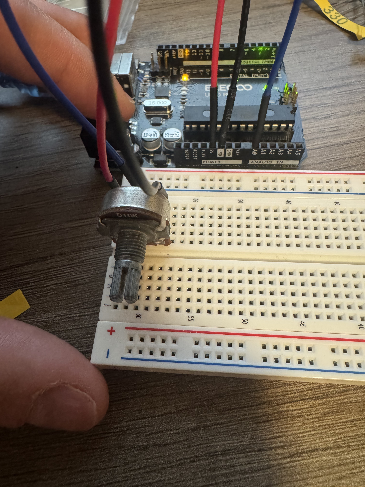
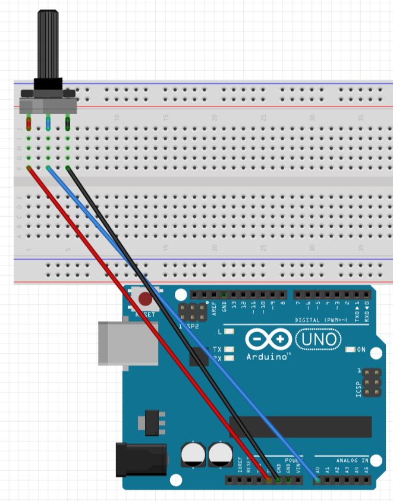
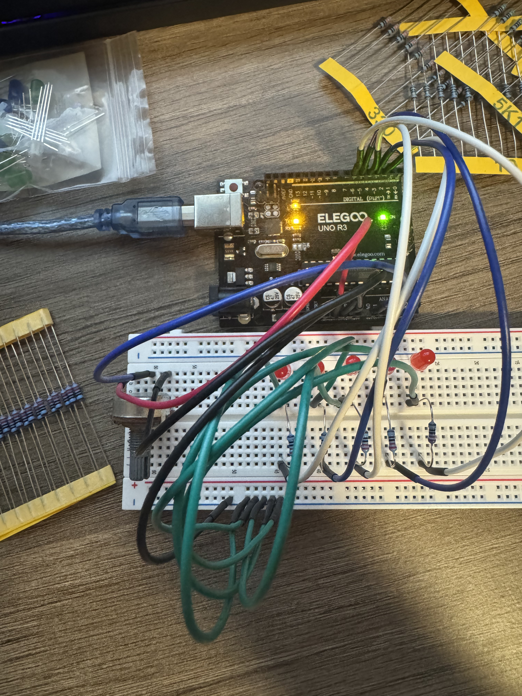
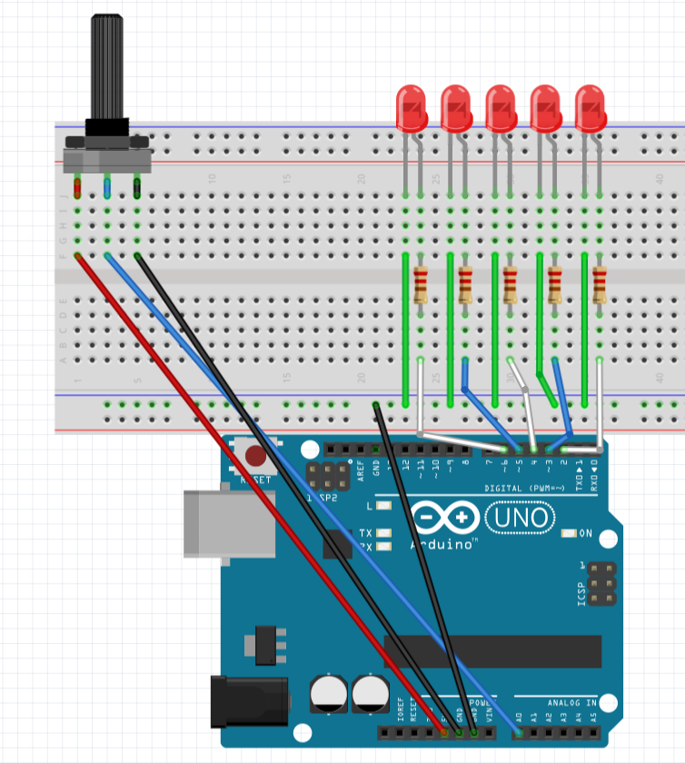
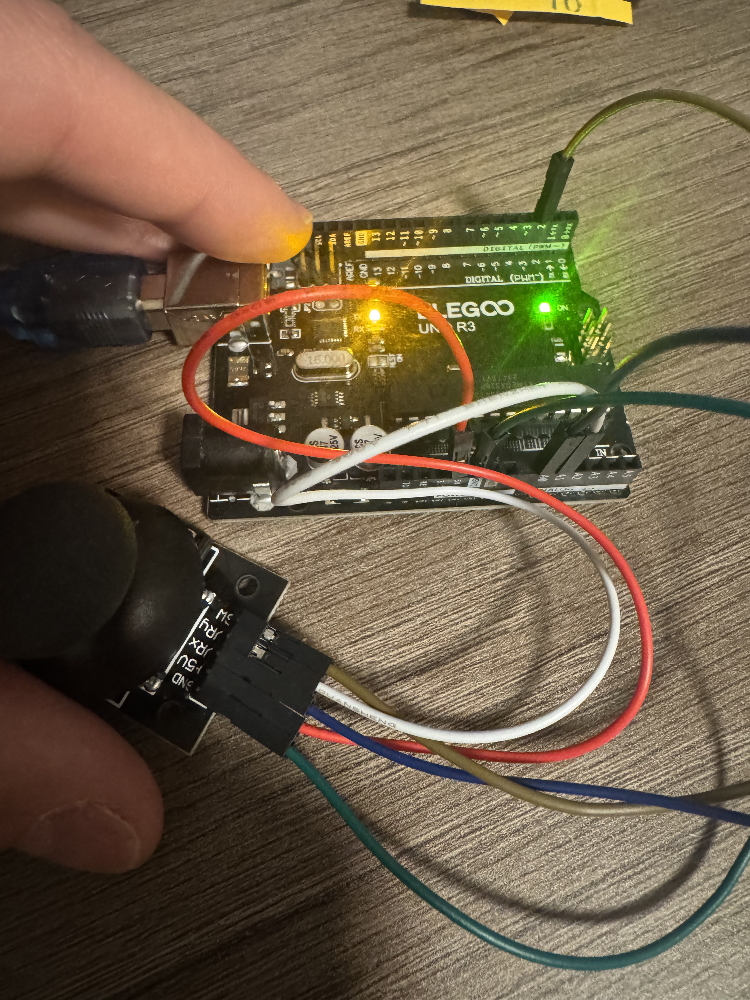
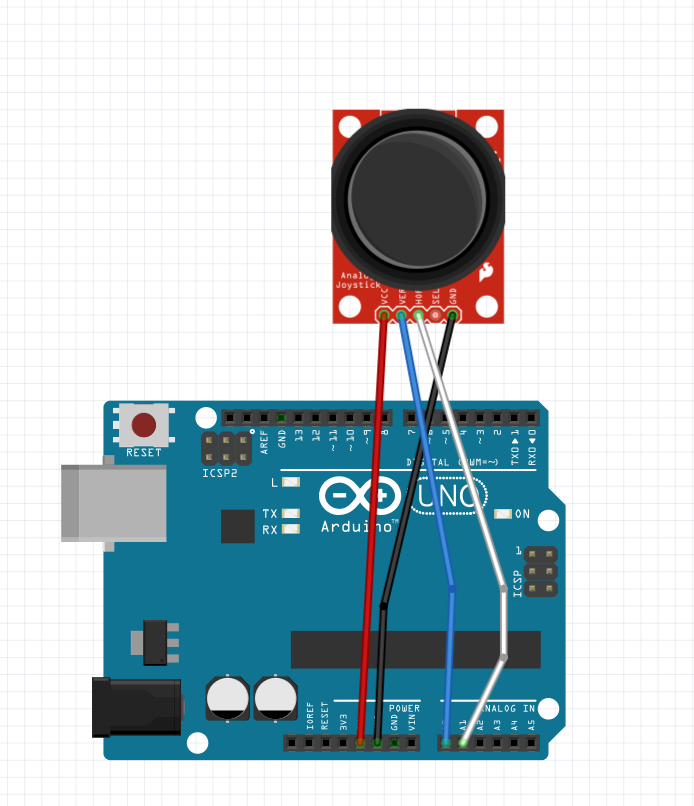
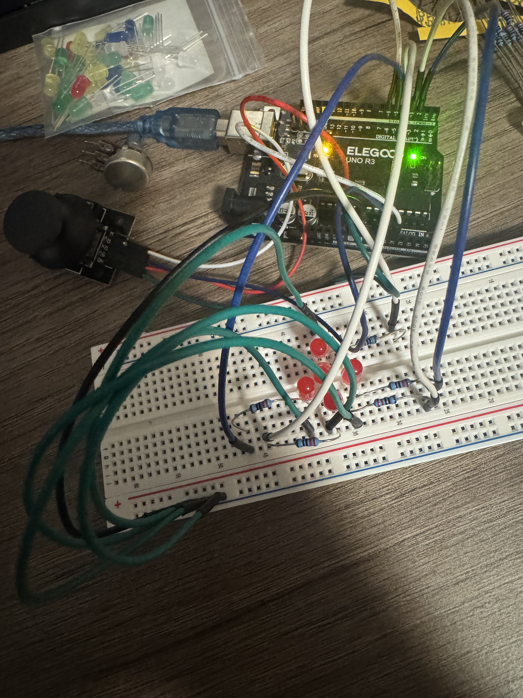
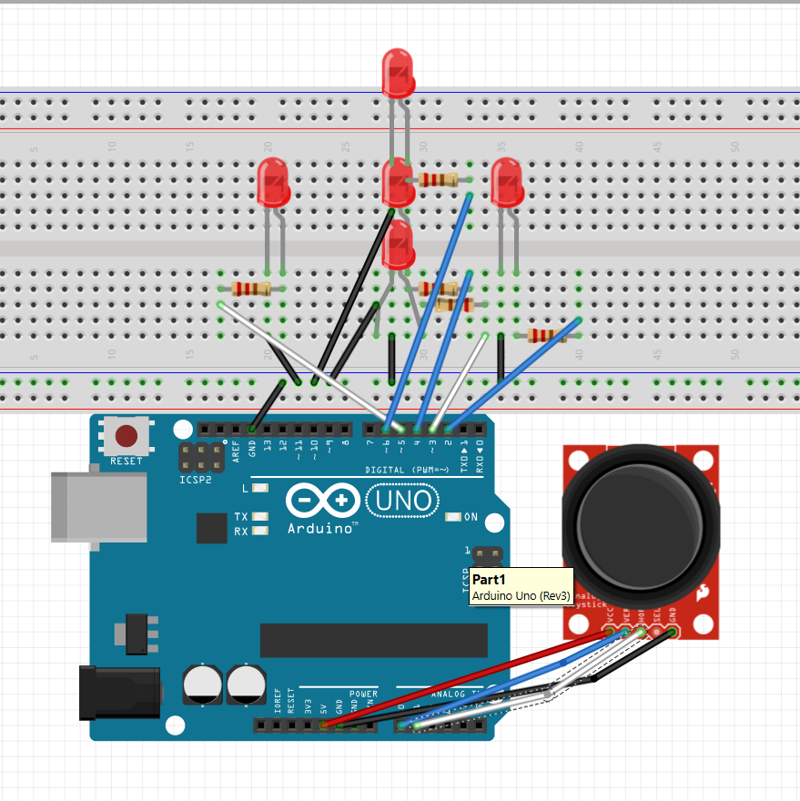

Class: ATLS 3300
Name: Sammy Muroff
Date: 02/17/2026
In this lab I explored analog input on the Arduino using a potentiometer and a joystick. I measured a changing analog voltage with analogRead(), then mapped that value to LED output. Next, I read the joystick's X and Y axes and used thresholding to detect directional pushes. Finally, I built a Whack-A-Mole style game where one LED is the target and the joystick direction is used to hit the correct LED and a time is given at the end.
The potentiometer and joystick axes are read through the Arduino's ADC (0-1023). The potentiometer is a voltage divider, the wiper outputs a voltage between 0V and 5V depending on its position. The joystick VRx and VRy behave the same way but are mechanically controlled by the stick position. The LED behaviors are driven with digital output pins controlling voltage. For the bar graph, the ADC reading is mapped to an integer count of LEDs to illuminate. For joystick direction, thresholds and a deadzone are used to convert analog values into discrete directions and in Part 4, diagonal directions light two LEDs at once.

The Arduino ADC returns 0-1023 for 0-5V. I converted readings to voltage using:
voltage = raw * 5.0 / 1023.0To display a 5-LED bar, I mapped the potentiometer range to the number of LEDs to turn on:
ledOn = map(potValue, 0, 1023, 0, 5)Example: If potValue is about 512, ledOn is about 2-3 LEDs depending on rounding.


// analog pin where the potentiometer is connected
const int potentiometer = A0;
void setup() {
Serial.begin(9600);
}
void loop() {
// reads the potentiometer
int raw = analogRead(potentiometer);
// convert to volts
float voltage = raw * 5.0 / 1023.0;
// print everything and delay
Serial.print("raw = ");
Serial.print(raw);
Serial.print(" V = ");
Serial.println(voltage);
delay(500);
}

// LED pins (left to right)
int pin_LEDarray[] = {2, 3, 4, 5, 6};
// potentiometer analog pin
#define pin_potentiometer A0
void setup() {
// set each LED pin as an output
for (int i = 0; i < 5; i++) {
pinMode(pin_LEDarray[i], OUTPUT);
}
}
void loop() {
// start by turning all LEDs off so we can redraw the bar cleanly
for (int i = 0; i < 5; i++) {
digitalWrite(pin_LEDarray[i], LOW);
}
// read potentiometer (0 to 1023)
int potValue = analogRead(pin_potentiometer);
// convert pot range to number of LEDs on (0 to 5)
int ledOn = map(potValue, 0, 1023, 0, 5);
// turn on the first ledOn LEDs
for (int i = 0; i < ledOn; i++) {
digitalWrite(pin_LEDarray[i], HIGH);
}
}

// VRx
const int xPin = A0;
// VRy
const int yPin = A1;
// SW
const int swPin = 2;
void setup() {
Serial.begin(9600);
pinMode(swPin, INPUT);
}
void loop() {
// 0 to 1023
int xVal = analogRead(xPin);
// 0 to 1023
int yVal = analogRead(yPin);
// HIGH when pressed, LOW otherwise
int swVal = digitalRead(swPin);
Serial.print("X = ");
Serial.print(xVal);
Serial.print(" Y = ");
Serial.print(yVal);
Serial.print(" SW = ");
Serial.println(swVal);
delay(50);
}

int LEDarray[] = {2, 3, 4, 5, 6};
// index mapping:
// 0 = top, 1 = right, 2 = center, 3 = left, 4 = bottom
#define pin_JoyX A0
#define pin_JoyY A1
// thresholds
const int highThresh = 900;
const int lowThresh = 100;
const int midLow = 350;
const int midHigh = 650;
void setup() {
for (int i = 0; i < 5; i++) {
pinMode(LEDarray[i], OUTPUT);
}
}
void loop() {
// turn off everything first
for (int i = 0; i < 5; i++) {
digitalWrite(LEDarray[i], LOW);
}
// read joystick
int xVal = analogRead(pin_JoyX);
int yVal = analogRead(pin_JoyY);
// helpers
bool xMid = (xVal > midLow && xVal < midHigh);
bool yMid = (yVal > midLow && yVal < midHigh);
bool up = (yVal > highThresh);
bool down = (yVal < lowThresh);
bool right = (xVal > highThresh);
bool left = (xVal < lowThresh);
// centered = only center LED
if (xMid && yMid) {
digitalWrite(LEDarray[2], HIGH);
}
else {
// diagonals = two LEDs
if (up) digitalWrite(LEDarray[0], HIGH);
if (right) digitalWrite(LEDarray[1], HIGH);
if (left) digitalWrite(LEDarray[3], HIGH);
if (down) digitalWrite(LEDarray[4], HIGH);
}
delay(10);
}Same circuit as Part 4.

I started by defining what counts as each joystick direction using thresholds and a deadzone so the center doesn't accidentally trigger. Then I made the game loop run 20 rounds, each round picks a random direction LED, turns it on, and waits in a while-loop until the joystick matches that direction. When the input matches, the LED turns off and the next round starts. I timed the whole game using millis() by saving a start time before the rounds and subtracting it from the end time after 20 hits.
const byte LEDarray[] = {2, 6, 5, 3};
int middle = 4;
#define pin_JoyX A0
#define pin_JoyY A1
// joystick threshold
const int highThresh = 900;
const int lowThresh = 100;
const int midLow = 350;
const int midHigh = 650;
unsigned long startTime;
unsigned long endTime;
unsigned long Time;
void setup() {
// 4 direction LEDs as outputs
for (int i = 0; i < 4; i++) {
pinMode(LEDarray[i], OUTPUT);
}
// center LED output
pinMode(middle, OUTPUT);
Serial.begin(9600);
}
void loop() {
Serial.println("Get ready ... :");
// blink the center LED 2 times for .5 seconds
digitalWrite(middle, HIGH);
delay(500);
digitalWrite(middle, LOW);
delay(500);
digitalWrite(middle, HIGH);
delay(500);
digitalWrite(middle, LOW);
delay(500);
// wait 1 second before starting
delay(1000);
// start the timer
startTime = millis();
int ledChoice;
bool stickChoice = false;
// run the game 20 times
for (int roundNum = 0; roundNum < 20; roundNum++) {
stickChoice = false;
// pick a random LED number
ledChoice = random(1, 5);
// turn that LED on
digitalWrite(LEDarray[ledChoice - 1], HIGH);
Serial.print("LED target (1-4) = ");
Serial.println(ledChoice);
// wait until the joystick values match target direction
while (stickChoice == false) {
int joyXValue = analogRead(pin_JoyX);
int joyYValue = analogRead(pin_JoyY);
// 1 up (Y high)
// 2 right (X high)
// 3 down(Y low)
// 4 left (X low)
if (ledChoice == 1 && joyYValue > highThresh && (joyXValue > midLow && joyXValue < midHigh)) {
stickChoice = true;
}
else if (ledChoice == 2 && joyXValue > highThresh && (joyYValue > midLow && joyYValue < midHigh)) {
stickChoice = true;
}
else if (ledChoice == 3 && joyYValue < lowThresh && (joyXValue > midLow && joyXValue < midHigh)) {
stickChoice = true;
}
else if (ledChoice == 4 && joyXValue < lowThresh && (joyYValue > midLow && joyYValue < midHigh)) {
stickChoice = true;
}
else {
stickChoice = false;
}
delay(10);
}
// once direction is hit turn off LEDs
for (int j = 0; j < 4; j++) {
digitalWrite(LEDarray[j], LOW);
}
// delay so it does not jump to next round
delay(150);
}
// stop timer and print
endTime = millis();
Time = endTime - startTime;
Serial.print("Took you ");
Serial.println(Time);
delay(3000);
}
debug_1.jpg

debug_2.jpg
This lab showed how analog sensors produce a range of values and how to turn those readings into actions in code. The potentiometer was a very clear example of reading a variable voltage, while the joystick required thresholding and a deadzone to reliably detect direction. Combining joystick input with a plus layout of LEDs made the mapping easy to understand, and the final game tied analog input, logic, and output together in a single project.